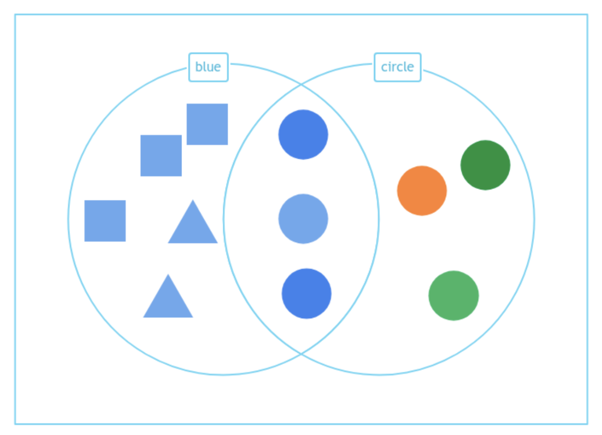

Sorting Data with Venn and Carroll Diagrams
Sorting means putting things into groups based on their characteristics, such as color, shape, or size. Today, we’ll look at two ways to sort objects: Venn diagrams and Carroll diagrams.
Venn Diagram
What is a Venn Diagram?
A Venn diagram uses two overlapping circles. You put things in the circles based on their characteristics. If something fits both categories, it goes in the overlap.
Example:
Let’s sort shapes by being blue and circle.
- Blue circles are blue and circle, so they go in the overlap.
- Orange and green circles are circle but not blue, so they go in the 'circle' circle.
- Blue squares and triangles are blue but not circle, so they go in the 'blue' circle.
How to use a Venn Diagram:
- Draw two overlapping circles.
- Label one circle with one characteristic (e.g., circle), and the other circle with another (e.g., blue).
- Put items that fit both characteristics in the overlap.
- Put items that fit only one characteristic in the parts of the circles that don’t overlap.

Carroll Diagram
What is a Carroll Diagram?
A Carroll diagram is a grid where you sort things into different boxes based on two characteristics.
Example:
Sort fruits by color (Red, Green) and shape (Round, Not Round).
How to use a Carroll Diagram:
- Draw a grid with rows and columns.
- Label each row and column with the two criteria (e.g., Color: Red, Green; Shape: Round, Not Round).
- Put the items in the correct boxes based on both characteristics.
| Color |
Red |
Green |
| Round |
Apple, Cherry |
Grapefruit |
| Not Round |
Strawberry |
Pear |